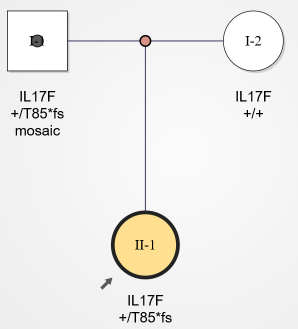

| 自闭症 | 中性粒细胞阙如是血液中的一种中性粒细胞（一种白血球细胞）浓度异常低，中性粒细胞弥补大多数的循环白血球，作为对抗感染的主要防护，特征是白血球中的中性白血球数量异常低。引发症状包括发烧、吞咽痛、牙龈疼、耳炎等。 |
| 致病原因 | 短期性的中性粒细胞阙如主要是由伤寒、结核或药物等原因导致，长期性的中性粒细胞阙如只要由于遗传性疾病导致。 |
| 先证者 | 持续高烧，临床上诊断为中性粒细胞阙如。 |
| 检测方案 | 全外显子测序。 |
| 检测结果 | 标准数据分析流程未检测出任何已知致病基因缺陷，使用自主研发的人工智能分析系统检测出患儿存在IL17F T85*fs 杂合突变，父亲存在IL17F T85*fs的嵌合突变。  |
| 结果解析 | 人工智能分析系统搜索到一篇临床研究报告，关于治疗类风湿的单抗药，该单抗药主要针对IL17F，打了单抗药的被试中两个人出现了中性粒细胞阙如。IL17F基因T85*fs突变是一个选择性剪切位点，随着小孩的发育长大剪切会跳过这个位点，小孩后面会逐渐恢复正常。 |
| 临床效果 | 若患者是因IL17F T85*fs致病，长大后会换剪切位点，半年随访，中性粒细胞数回升稳定。 |
| 检测意义 | 准确诊断疾病的病因，不仅找到到合适的药物进行治疗，还准确的预测了预后。 |